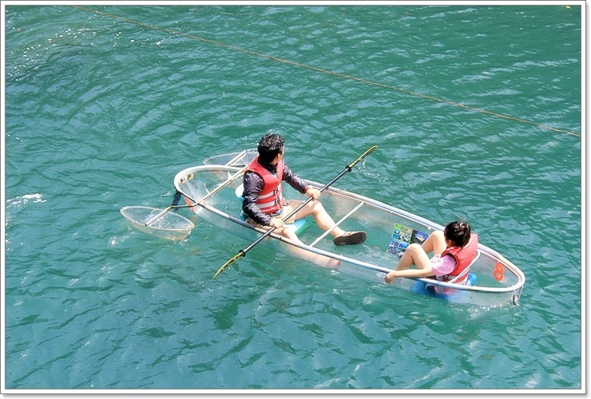

제주도 3박 4일 여행
- 1일차
- 2일차
- 3일차
3일차
애월로 이동!
1. 애월 가기전에 제주시에서 자매국수 먹고 그럼외도 카페 갔다가 이동
2. 아니면 애월로 이동해서 라면, 고등어쌈밥 먹어도 됨
그럼외도 카페 너무 이뻐서 꼭 가고 싶음!!
그래서 내생각엔 1하고 좀 쉬다가 해수욕장 걷고 카약하는거 좋을 것 같음!
곽지 해수욕장 및 산책로 걷기
곽지해수욕장에서 걸어서 한담해변으로 이동(투명카약)
투명카약타기!

카약타고 랜디스, 노티드 도넛 테이크 아웃 해서 먹든지 카페 가기
저녁도 먹고 숙소로!